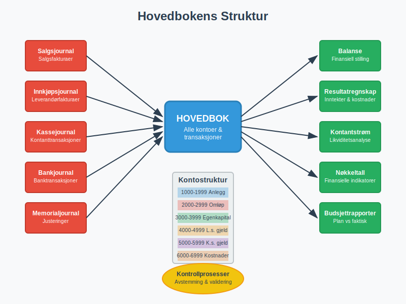
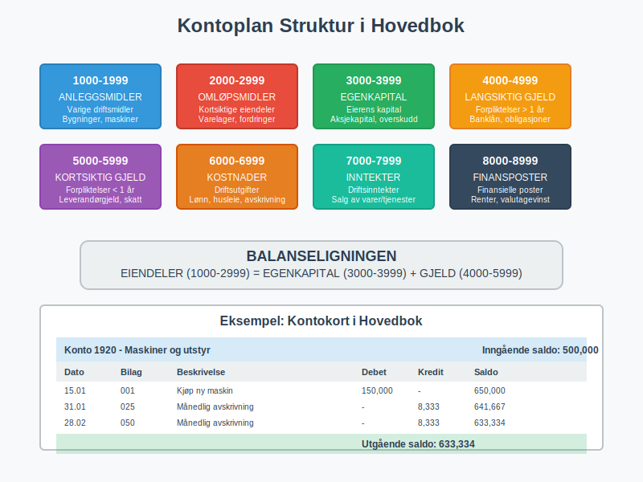
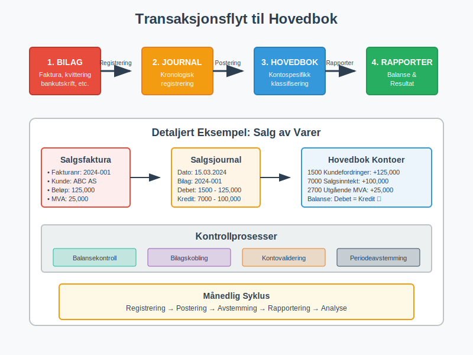
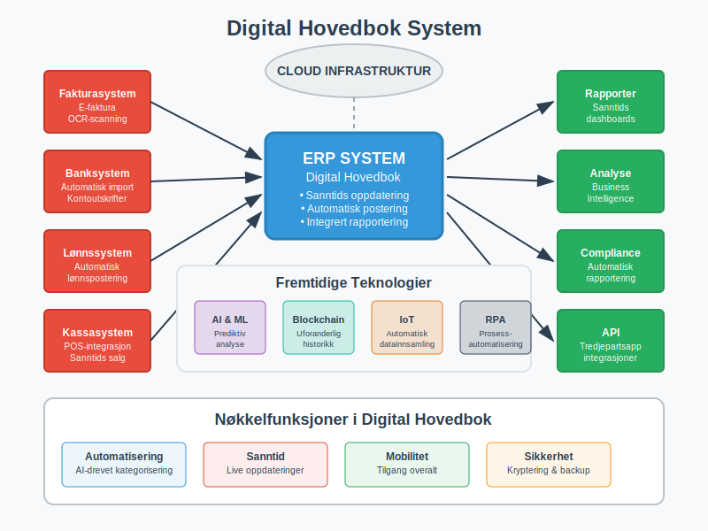
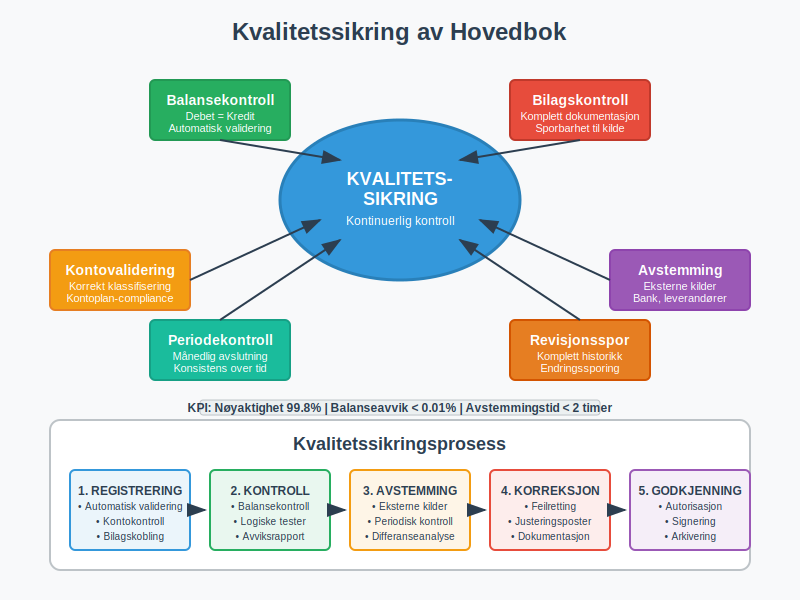
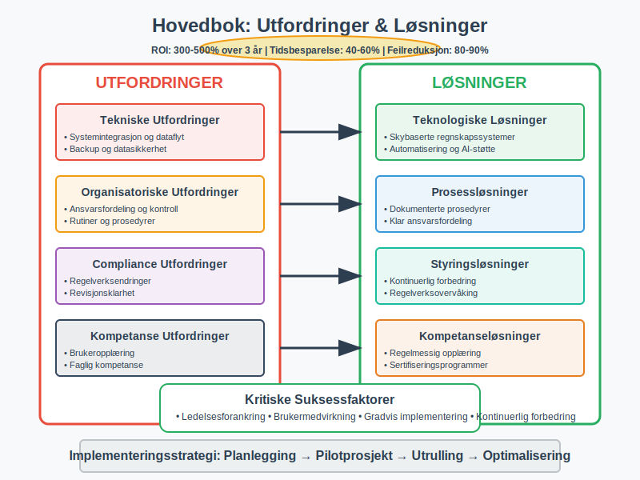

Hovedboken er det sentrale registeret i enhver virksomhets regnskapsføring og utgjør ryggraden i det moderne bokføringssystemet. Som en systematisk samling av alle kontoer og transaksjoner, fungerer hovedboken som det primære kilderegisteret for regnskapet og danner grunnlaget for all finansiell rapportering i norske virksomheter.
Hva er Hovedbok?
Hovedboken er en systematisk oversikt over alle kontoer i virksomheten, hvor hver konto viser alle transaksjoner som har påvirket den spesifikke kontoen i løpet av regnskapsperioden. Den fungerer som det sentrale arkivet hvor alle bilag og transaksjoner fra bokføringen samles og organiseres etter kontotype.

Hovedbokens Hovedfunksjoner
- Sentralisert registrering: Samler alle transaksjoner fra ulike journaler og registre
- Kontospesifikk oversikt: Viser alle bevegelser på hver enkelt konto
- Balansekontroll: Sikrer at debet og kredit balanserer
- Rapporteringsgrunnlag: Danner basis for balanse og resultatregnskap
- Sporbarhet: Sikrer full dokumentasjon og revisjonsspor
- Periodeavslutning: Grunnlag for avstemming og årsavslutning
Hovedbokens Struktur og Organisering
Kontoplan og Kontosystem
Hovedboken organiseres etter den norske standard kontoplan, som følger et systematisk nummereringssystem basert på kontoklasser. Dette hierarkiske klassifiseringssystemet gir struktur til alle kontoer i regnskapet:
| Kontoklass | Kategori | Beskrivelse | Eksempler |
|---|---|---|---|
| 1000-1999 | Anleggsmidler | Varige driftsmidler og investeringer | Bygninger, maskiner, goodwill |
| 2000-2999 | Omløpsmidler | Kortsiktige eiendeler | Varelager, kundefordringer, bankinnskudd |
| 3000-3999 | Egenkapital | Eierens kapital i virksomheten | Aksjekapital, opptjent egenkapital |
| 4000-4999 | Langsiktig gjeld | Forpliktelser over 1 år | Banklån, obligasjoner, pensjonsforpliktelser |
| 5000-5999 | Kortsiktig gjeld | Forpliktelser under 1 år | Leverandørgjeld, skyldige skatter, feriepenger |
| 6000-6999 | Driftskostnader | Løpende utgifter | Lønn, husleie, avskrivninger |
| 7000-7999 | Driftsinntekter | Ordinære inntekter | Salg av varer og tjenester |
| 8000-8999 | Finansposter | Finansielle inntekter og kostnader | Renteinntekter, rentekostnader, valutagevinst |

Kontokort og Transaksjonshistorikk
Hver konto i hovedboken inneholder følgende informasjon:
Kontohode:
- Kontonummer og kontonavn
- Kontotype (balanse- eller resultatkonto)
- Inngående saldo
- Utgående saldo
Transaksjonslinjer:
- Dato for transaksjon
- Bilagsnummer
- Beskrivelse av transaksjon
- Debet- og kreditbeløp
- Løpende saldo
Praktisk Bruk av Hovedboken
1. Daglig Registrering og Oppdatering
Transaksjonsflyt til hovedbok:
- Bilagsregistrering: Alle fakturaer og dokumenter registreres
- Journalføring: Transaksjoner føres først i relevante journaler
- Hovedbokpostering: Automatisk eller manuell overføring til hovedbok
- Balansekontroll: Kontinuerlig kontroll av debet/kredit-balanse

2. Månedlig Avstemming og Kontroll
Avstemmingsrutiner:
- Bankavstemming: Kontroll mot bankutskrifter
- Kundefordringer: Avstemming mot debitorregister
- Leverandørgjeld: Kontroll mot leverandørreskontro
- Varelager: Fysisk telling og verdijustering
- MVA-avstemming: Kontroll av mva-poster
3. Rapportering og Analyse
Hovedboken danner grunnlag for:
Finansielle rapporter:
- Balanse (finansiell stilling)
- Resultatregnskap (drift og resultat)
- Kontantstrømoppstilling
- Noter til regnskapet
Styringsrapporter:
- Budsjettoppfølging
- Dekningsbidragsanalyse
- Likviditetsanalyse
- Avviksanalyse
Digitale Hovedboksystemer
Moderne ERP og Regnskapssystemer
Dagens ERP-systemer har revolusjonert hovedbokføringen:
Automatiserte funksjoner:
- Automatisk postering fra undermoduler
- Sanntids oppdatering av saldoer
- Integrert bilagshåndtering
- Automatisk avstemming
Rapporteringsmuligheter:
- Sanntids rapporter og dashboards
- Flerdimensjonal analyse
- Automatisk konsolidering
- Integrert budsjett og prognose

Integrasjon med Andre Systemer
Systemintegrasjoner:
- Fakturasystemer
- Lønnssystemer
- Kassasystemer
- Banksystemer
- Lagerstyringssystemer
Juridiske Krav og Compliance
Bokføringsloven og Hovedbok
Bokføringsloven stiller spesifikke krav til hovedbokføring:
Lovkrav:
- Fullstendighet: Alle transaksjoner skal registreres
- Nøyaktighet: Korrekte beløp og datoer
- Sporbarhet: Klar kobling mellom bilag og hovedbok
- Oppbevaring: Minimum 5 års oppbevaringsplikt
- Tilgjengelighet: Rask tilgang for kontroll og revisjon
Revisjonsaspekter
Revisjonsaktiviteter knyttet til hovedbok:
- Kontroll av arbeidspapirer
- Substansielle tester av kontosaldoer
- Analytiske gjennomganger
- Kontroll av attestering og godkjenning
Beste Praksis for Hovedbokføring
1. Organisering og Struktur
Kontoplanvedlikehold:
- Regelmessig gjennomgang av kontoplan
- Konsistent bruk av kontonumre
- Tydelige kontobeskrivelser
- Dokumentasjon av kontoanvendelse
Periodiske rutiner:
- Daglig registrering av transaksjoner
- Ukentlig kontroll av saldoer
- Månedlig avstemming av alle hovedkontoer
- Kvartalsvis gjennomgang av kontosystem
2. Kvalitetssikring
Kontrollrutiner:
- Dobbel bokføring kontroll
- Balansekontroll (debet = kredit)
- Logiske kontroller og validering
- Månedlig avstemming mot eksterne kilder
Dokumentasjon:
- Klar kobling mellom bilag og poster
- Forklarende tekster på transaksjoner
- Dokumentasjon av spesielle poster
- Arkivering av støttedokumentasjon

3. Effektivisering og Automatisering
Automatiseringsmuligheter:
- Automatisk import fra banksystemer
- Gjentakende transaksjoner (templates)
- Automatisk mva-beregning
- Integrert bilagsgjenkjenning
Hovedbok og Finansiell Analyse
Nøkkeltall og Indikatorer
Hovedboken gir grunnlag for beregning av viktige finansielle nøkkeltall:
Lønnsomhetsanalyse:
- Bruttofortjeneste
- Driftsresultat
- Avkastning på egenkapital
Soliditetsanalyse:
- Egenkapitalandel
- Gjeldsgrad
- Arbeidskapital
Likviditetsanalyse:
- Likviditetsgrad 1 og 2
- Betalingsevne
- Kontantstrøm fra drift
Trendanalyse og Prognoser
Historisk analyse:
- Sammenligning mellom perioder
- Sesongvariasjoner og trender
- Vekstanalyse og utvikling
Fremtidsrettet analyse:
- Budsjettoppfølging
- Prognoser basert på historiske data
- Scenarioanalyser
Utfordringer og Løsninger
Vanlige Utfordringer
Tekniske utfordringer:
- Systemintegrasjon og dataflyt
- Backup og datasikkerhet
- Brukeropplæring og kompetanse
- Oppgradering av systemer
Organisatoriske utfordringer:
- Ansvarsfordeling og kontroll
- Rutiner og prosedyrer
- Kvalitetssikring
- Compliance og regelverksendringer
Løsningsstrategier
Teknologiske løsninger:
- Skybaserte regnskapssystemer
- Automatisering og AI-støtte
- Integrerte business intelligence-verktøy
- Mobile løsninger for tilgang
Organisatoriske tiltak:
- Klar ansvarsfordeling
- Dokumenterte prosedyrer
- Regelmessig opplæring
- Kontinuerlig forbedring

Fremtiden for Hovedbokføring
Teknologiske Trender
Kunstig intelligens og maskinlæring:
- Automatisk kategorisering av transaksjoner
- Anomalideteksjon og feilidentifikasjon
- Prediktiv analyse og prognoser
- Intelligent dokumentgjenkjenning
Blockchain og distribuerte systemer:
- Uforanderlig transaksjonshistorikk
- Automatiske smart contracts
- Desentralisert verifikasjon
- Økt transparens og tillit
Regulatoriske Endringer
Digitalisering av rapportering:
- Standardiserte digitale formater
- Sanntids rapportering til myndigheter
- Automatisk compliance-sjekk
- Integrert skatteberegning
Konklusjon
Hovedboken utgjør det fundamentale registeret i enhver virksomhets regnskapsføring og er avgjørende for å opprettholde god regnskapsskikk. Som det sentrale samlingspunktet for alle økonomiske transaksjoner, sikrer hovedboken sporbarhet, kontroll og grunnlag for pålitelig finansiell rapportering.
For norske virksomheter er det essensielt å etablere robuste rutiner for hovedbokføring som oppfyller bokføringslovens krav samtidig som de støtter effektiv økonomistyring. Saldobalansen utarbeides direkte fra hovedbokens data og fungerer som en kritisk kvalitetskontroll for å sikre at alle registreringer er korrekte. Med moderne digitale verktøy og automatiserte prosesser kan virksomheter oppnå både høy kvalitet og effektivitet i hovedbokføringen.
Investering i gode hovedboksystemer og -rutiner gir langsiktige fordeler gjennom bedre kontroll, raskere rapportering og mer pålitelig grunnlag for strategiske beslutninger. Dette gjør hovedboken til en kritisk suksessfaktor for enhver virksomhets økonomiske styring og utvikling.